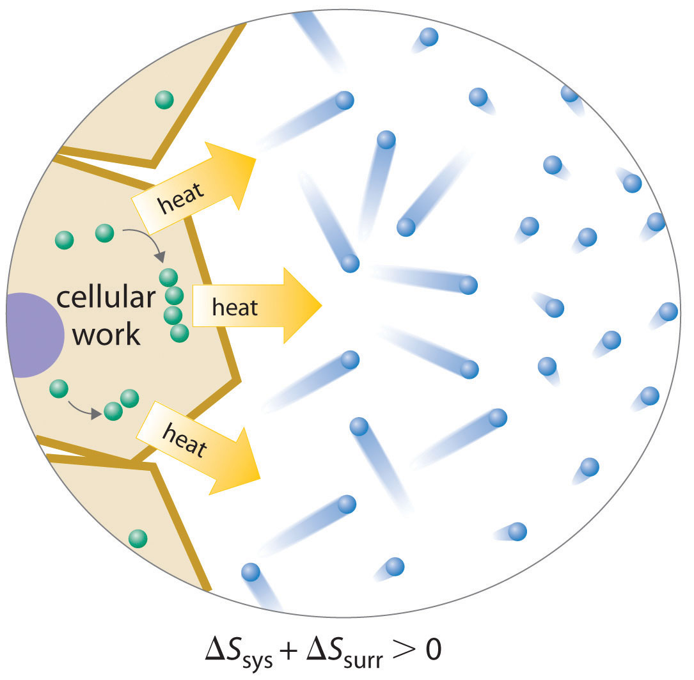
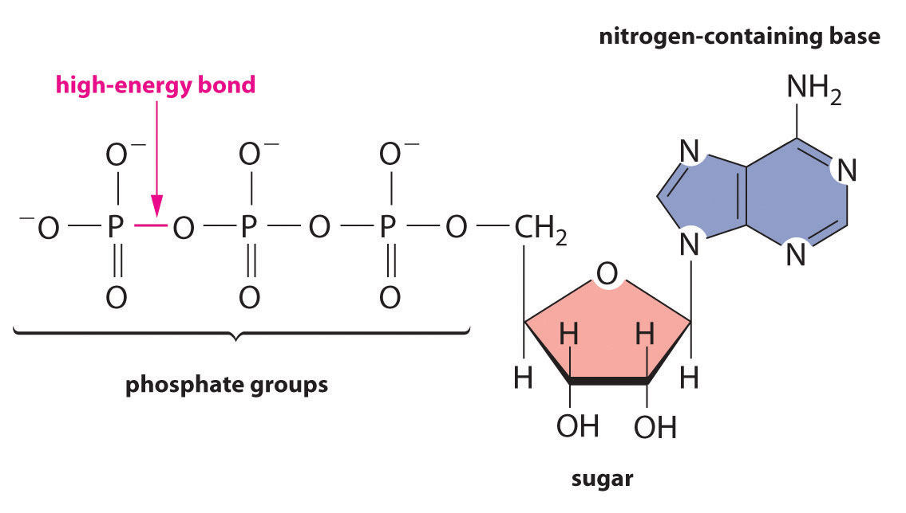
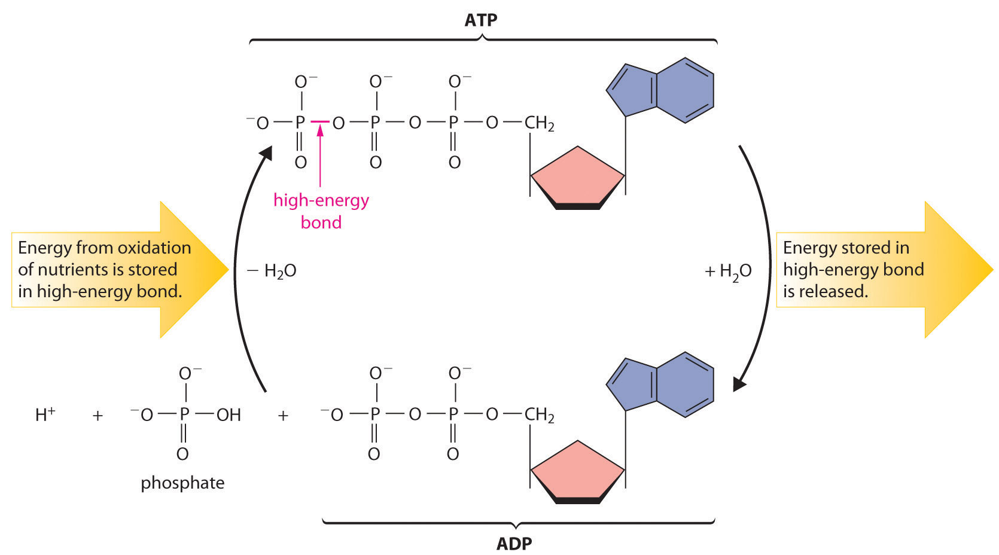
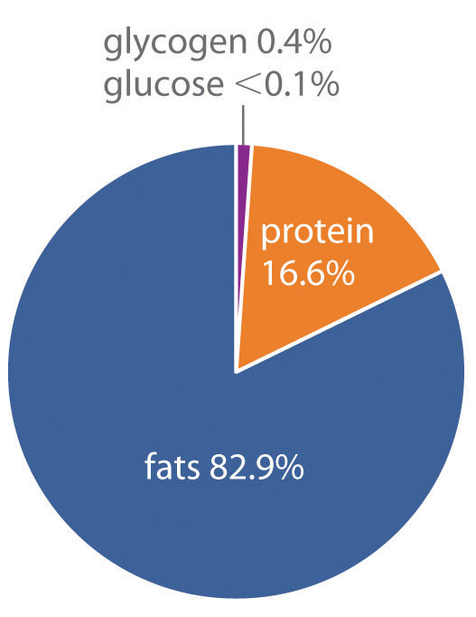

In a thermodynamic sense, a living cell can be viewed as a low-entropy system that is not in equilibrium with its surroundings and is capable of replicating itself. A constant input of energy is needed to maintain the cell’s highly organized structure, its wide array of precisely folded biomolecules, and its intricate system of thousands of chemical reactions. A cell also needs energy to synthesize complex molecules from simple precursors (e.g., to make proteins from amino acids), create and maintain differences in the concentrations of various substances inside and outside the cell, and do mechanical work (e.g., muscle contraction). In this section, we examine the nature of the energy flow between a cell and its environment as well as some of the chemical strategies cells use to extract energy from their surroundings and store that energy.
One implication of the first and second laws of thermodynamics is that any closed system must eventually reach equilibrium. With no external input, a clock will run down, a battery will lose its charge, and a mixture of an aqueous acid and an aqueous base will achieve a uniform intermediate pH value. In contrast, a cell is an open system that can exchange matter with its surroundings as well as absorb energy from its environment in the form of heat or light. Cells use the energy obtained in these ways to maintain the nonequilibrium state that is essential for life.
Because cells are open systems, they cannot be described using the concepts of classical thermodynamics that we have discussed in this chapter, which have focused on reversible processes occurring in closed chemical systems that can exchange energy—but not matter—with their surroundings. Consequently, a relatively new subdiscipline called nonequilibrium thermodynamics has been developed to quantitatively describe open systems such as living cells.
Because a cell cannot violate the second law of thermodynamics, the only way it can maintain a low-entropy, nonequilibrium state characterized by a high degree of structural organization is to increase the entropy of its surroundings. A cell releases some of the energy that it obtains from its environment as heat that is transferred to its surroundings, thereby resulting in an increase in Ssurr (Figure 18.17 "Life and Entropy"). As long as ΔSsurr is positive and greater than ΔSsys, the entropy of the universe increases, so the second law of thermodynamics is not violated. Releasing heat to the surroundings is necessary but not sufficient for life: the release of energy must be coupled to processes that increase the degree of order within a cell. For example, a wood fire releases heat to its surroundings, but unless energy from the burning wood is also used to do work, there is no increase in order of any portion of the universe.
Figure 18.17 Life and Entropy
A living cell is in a low-entropy, nonequilibrium state characterized by a high degree of structural organization. To maintain this state, a cell must release some of the energy it obtains from its environment as heat, thereby increasing Ssurr sufficiently that the second law of thermodynamics is not violated. In this example, the cell combines smaller components into larger, more ordered structures; the accompanying release of heat increases the entropy of the surrounding environment so that Suniv > 0.
Any organism in equilibrium with its environment is dead.
Although organisms employ a wide range of specific strategies to obtain the energy they need to live and reproduce, they can generally be divided into two categories: organisms are either phototrophs (from the Greek photos, meaning “light,” and trophos, meaning “feeder”), whose energy source is sunlight, or chemotrophs, whose energy source is chemical compounds, usually obtained by consuming or breaking down other organisms. Phototrophs, such as plants, algae, and photosynthetic bacteria, use the radiant energy of the sun directly, converting water and carbon dioxide to energy-rich organic compounds, whereas chemotrophs, such as animals, fungi, and many nonphotosynthetic bacteria, obtain energy-rich organic compounds from their environment. Regardless of the nature of their energy and carbon sources, all organisms use oxidation–reduction, or redox, reactions to drive the synthesis of complex biomolecules. Organisms that can use only O2 as the oxidant (a group that includes most animals) are aerobic organisms that cannot survive in the absence of O2. Many organisms that use other oxidants (such as SO42−, NO3−, or CO32−) or oxidized organic compounds can live only in the absence of O2, which is a deadly poison for them; such species are called anaerobic organisms.
The fundamental reaction by which all green plants and algae obtain energy from sunlight is photosynthesisThe fundamental reaction by which all green plants and algae obtain energy from sunlight in which is photochemically reduced to a carbon compound such as glucose. Oxygen in water is concurrently oxidized to , the photochemical reduction of CO2 to a carbon compound such as glucose. Concurrently, oxygen in water is oxidized to O2 (recall that hν is energy from light):
Equation 18.49
This reaction is not a spontaneous process as written, so energy from sunlight is used to drive the reaction. Photosynthesis is critical to life on Earth; it produces all the oxygen in our atmosphere.
In many ways, chemotrophs are more diverse than phototrophs because the nature of both the reductant (the nutrient) and the oxidant can vary. The most familiar chemotrophic strategy uses compounds such as glucose as the reductant and molecular oxygen as the oxidant in a process called respirationA process by which chemotrophs obtain energy from their environment; the overall reaction of respiration is the reverse of photosynthesis. Respiration is the combustion of a carbon compound such as glucose to and water.. (For more information on respiration, see Chapter 5 "Energy Changes in Chemical Reactions".) The overall reaction of respiration is the reverse of photosynthesis:
Equation 18.50
An alternative strategy uses fermentationA process used by some chemotrophs to obtain energy from their environment; a chemical reaction in which both the oxidant and the reductant are organic compounds. reactions, in which an organic compound is simultaneously oxidized and reduced. Common examples are alcohol fermentation, used in making wine, beer, and bread, and lactic acid fermentation, used in making yogurt:
Equation 18.51
Equation 18.52
In these reactions, some of the carbon atoms of glucose are oxidized, while others are reduced. Recall that a reaction in which a single species is both oxidized and reduced is called a disproportionation reaction.
Regardless of the identity of the substances from which an organism obtains energy, the energy must be released in very small increments if it is to be useful to the cell. Otherwise, the temperature of the cell would rise to lethal levels. Cells store part of the energy that is released as ATP (adenosine triphosphate), a compound that is the universal energy currency of all living organisms (Figure 18.18 "ATP, the Universal Energy Currency of All Cells").
Figure 18.18 ATP, the Universal Energy Currency of All Cells
The ATP molecule contains a nitrogen-containing base, a sugar, and three phosphate groups, as well as two high-energy phosphoric acid anhydride bonds.
Most organisms use several intermediate species to shuttle electrons between the terminal reductant (such as glucose) and the terminal oxidant (such as O2). In virtually all cases, an intermediate species oxidizes the energy-rich reduced compound, and the now-reduced intermediate then migrates to another site where it is oxidized. The most important of these electron-carrying intermediates is NAD+ (nicotinamide adenine dinucleotide; Figure 18.19 "NAD"), whose reduced form, formally containing H−, is NADH (reduced nicotinamide adenine dinucleotide). The reduction of NAD+ to NADH can be written as follows:
Equation 18.53
NAD+ + H+ + 2e− → NADHFigure 18.19 NAD+ and Its Reduced Form (NADH)

This electron carrier is used by biological systems to transfer electrons from one species to another. The oxidized form (NAD+) is reduced to NADH by energy-rich nutrients such as glucose, and the reduced form (NADH), is then oxidized to NAD+ by O2 during respiration.
Most organisms use NAD+ to oxidize energy-rich nutrients such as glucose to CO2 and water; NADH is then oxidized to NAD+ using an oxidant such as O2. During oxidation, a fraction of the energy obtained from the oxidation of the nutrient is stored as ATP. The phosphoric acid anhydride bonds in ATP can then be hydrolyzed by water, releasing energy and forming ADP (adenosine diphosphate). It is through this sequence of reactions that energy from the oxidation of nutrients is made available to cells. Thus ATP has a central role in metabolism: it is synthesized by the oxidation of nutrients, and its energy is then used by cells to drive synthetic reactions and perform work (Figure 18.20 "The ATP Cycle").
Figure 18.20 The ATP Cycle
The high-energy phosphoric acid anhydride bond in ATP stores energy released during the oxidation of nutrients. Hydrolysis of the high-energy bond in ATP releases energy, forming adenosine diphosphate (ADP) and phosphate.
Under standard conditions in biochemical reactions, all reactants are present in aqueous concentrations of 1 M at a pressure of 1 atm. For H+, this corresponds to a pH of zero, but very little biochemistry occurs at pH = 0. For biochemical reactions, chemists have therefore defined a new standard state in which the H+ concentration is 1 × 10−7 M (pH 7.0), and all other reactants and products are present in their usual standard-state conditions (1 M or 1 atm). The free-energy change and corresponding equilibrium constant for a reaction under these new standard conditions are denoted by the addition of a prime sign (′) to the conventional symbol: ΔG°′ and K′. If protons do not participate in a biological reaction, then ΔG°′ = ΔG°. Otherwise, the relationship between ΔG°′ and ΔG° is as follows:
Equation 18.54
ΔG°′ = ΔG° + RT ln(10−7)nwhere ΔG°′ and ΔG° are in kilojoules per mole and n is the number of protons produced in the reaction. At 298 K, this simplifies to
Equation 18.55
ΔG°′ = ΔG° − 39.96nThus any reaction that involves the release of protons is thermodynamically more favorable at pH 7 than at pH 0.
The chemical equation that corresponds to the hydrolysis of ATP to ADP and phosphate is as follows:
Equation 18.56
This reaction has a ΔG°′ of −34.54 kJ/mol, but under typical physiological (or biochemical) conditions, the actual value of ΔG′ for the hydrolysis of ATP is about −50 kJ/mol. Organisms use this energy to drive reactions that are energetically uphill, thereby coupling the reactions to the hydrolysis of ATP. One example is found in the biochemical pathway of glycolysis, in which the 6-carbon sugar glucose (C6H12O6) is split into two 3-carbon fragments that are then used as the fuel for the cell. Initially, a phosphate group is added to glucose to form a phosphate ester, glucose-6-phosphate (abbreviated glucose-6-P), in a reaction analogous to that of an alcohol and phosphoric acid:
Equation 18.57
Due to its electrical charge, the phosphate ester is unable to escape from the cell by diffusing back through the membrane surrounding the cell, ensuring that it remains available for further reactions. For the reaction in Equation 18.57, ΔG° is 17.8 kJ/mol and K is 7.6 × 10−4, indicating that the equilibrium lies far to the left. To force this reaction to occur as written, it is coupled to a thermodynamically favorable reaction, the hydrolysis of ATP to ADP:
Thus the formation of glucose-6-phosphate is thermodynamically spontaneous if ATP is used as the source of phosphate.
Organisms use energy from the hydrolysis of ATP to drive reactions that are thermodynamically nonspontaneous.
The formation of glucose-6-phosphate is only one of many examples of how cells use ATP to drive an otherwise nonspontaneous biochemical reaction. Under nonstandard physiological conditions, each ATP hydrolyzed actually results in approximately a 108 increase in the magnitude of the equilibrium constant, compared with the equilibrium constant of the reaction in the absence of ATP. Thus a reaction in which two ATP molecules are converted to ADP increases K by about 1016, three ATP molecules by 1024, and so forth. Virtually any energetically unfavorable reaction or sequence of reactions can be made to occur spontaneously by coupling it to the hydrolysis of a sufficiently large number of ATP molecules.
Although all organisms use ATP as the immediate free-energy source in biochemical reactions, ATP is not an efficient form in which to store energy on a long-term basis. If the caloric intake of an average resting adult human were stored as ATP, two-thirds of the body weight would have to consist of ATP. Instead, a typical 70 kg adult human has a total of only about 50 g of both ATP and ADP, and, far from being used for long-term storage, each molecule of ATP is turned over about 860 times per day. The entire ATP supply would be exhausted in less than 2 minutes if it were not continuously regenerated.
How does the body store energy for the eventual production of ATP? Three primary means are as sugars, proteins, and fats. The combustion of sugars and proteins yields about 17 kJ of energy per gram, whereas the combustion of fats yields more than twice as much energy per gram, about 39 kJ/g. Moreover, sugars and proteins are hydrophilic and contain about 2 g of water per gram of fuel, even in very concentrated form. In contrast, fats are hydrophobic and can be stored in essentially anhydrous form. As a result, organisms can store about six times more energy per gram as fats than in any other form. A typical 70 kg adult human has about 170 kJ of energy in the form of glucose circulating in the blood, about 2600 kJ of energy stored in the muscles and liver as glycogen (a polymeric form of glucose), about 100,000 kJ stored in the form of protein (primarily muscle tissue), and almost 500,000 kJ in the form of fats (Figure 18.21 "Percentages of Forms of Energy Storage in Adult Humans"). Thus fats constitute by far the greatest energy reserve, while accounting for only about 12 kg of the 70 kg body mass. To store this amount of energy in the form of sugars would require a total body mass of about 144 kg, more than half of which would be sugar.
Figure 18.21 Percentages of Forms of Energy Storage in Adult Humans
An average 70 kg adult stores about 6 × 105 kJ of energy in glucose, glycogen, protein, and fats. Fats are the most abundant and most efficient form for storing energy.
Glucose is one form in which the body stores energy.
Given: balanced chemical equation (Equation 18.50), values of , conversion efficiency, and ΔG°′ for hydrolysis of ATP
Asked for: ΔG°′ for the combustion reaction and the number of molecules of ATP that can be synthesized
Strategy:
A Using the “products minus reactants” rule, calculate for the respiration reaction.
B Multiply the calculated value of by the efficiency to obtain the number of kilojoules available for ATP synthesis. Then divide this value by ΔG°′ for the hydrolysis of ATP to find the maximum number of ATP molecules that can be synthesized.
Solution:
A Protons are not released or consumed in the reaction, so ΔG°′ = ΔG°. We begin by using the balanced chemical equation in Equation 18.50:
C6H12O6 + 6O2 → 6CO2 + 6H2OFrom the given values of (remember that is zero for an element such as O2 in its standard state), we can calculate :
B If we assume that only 50% of the available energy is used, then about 1440 kJ/mol of glucose is available for ATP synthesis. The value of ΔG°′ for the hydrolysis of ATP under biochemical conditions is −34.54 kJ/mol, so in principle an organism could synthesize
Most aerobic organisms actually synthesize about 32 molecules of ATP per molecule of glucose, for an efficiency of about 45%.
Exercise
Some bacteria synthesize methane using the following redox reaction:
CO2(g) + 4H2(g) → CH4(g) + 2H2O(g)Answer:
A living cell is a system that is not in equilibrium with its surroundings; it requires a constant input of energy to maintain its nonequilibrium state. Cells maintain a low-entropy state by increasing the entropy of their surroundings. Aerobic organisms cannot survive in the absence of O2, whereas anaerobic organisms can live only in the absence of O2. Green plants and algae are phototrophs, which extract energy from the environment through a process called photosynthesis, the photochemical reduction of CO2 to a reduced carbon compound. Other species, called chemotrophs, extract energy from chemical compounds. One of the main processes chemotrophs use to obtain energy is respiration, which is the reverse of photosynthesis. Alternatively, some chemotrophs obtain energy by fermentation, in which an organic compound is both the oxidant and the reductant. Intermediates used by organisms to shuttle electrons between the reductant and the oxidant include NAD+ and NADH. Energy from the oxidation of nutrients is made available to cells through the synthesis of ATP, the energy currency of the cell. Its energy is used by cells to synthesize substances through coupled reactions and to perform work. The body stores energy as sugars, protein, or fats before using it to produce ATP.
The tricarboxylic acid (TCA) cycle in aerobic organisms is one of four pathways responsible for the stepwise oxidation of organic intermediates. The final reaction in the TCA cycle has ΔG° = 29.7 kJ/mol, so it should not occur spontaneously. Suggest an explanation for why this reaction proceeds in the forward direction in living cells.
It is coupled to another reaction that is spontaneous, which drives this reaction forward (Le Châtelier’s principle).